Trabajos realizados en clase
<---------- Semana 10 ---------->
Elementos Básicos de Photoshop.:
Entorno de trabajo de Photoshop

IMAGEN DE REFERENCIA
Sobre esta imagen trabajamos el tritono y cuadritono
TRITONO
Se hizo un tritono con los colores: blanco, amarillo y negro
CUADRITONO
Se hizo un cuadritono con los colores: rojo, blanco, amarillo y negro
- Aplicar Efecto Duotono:
- Abre la imagen en Photoshop.
- Ve a
Imagen>Ajustes>Mapa de degradado. - Selecciona un degradado de duotono o crea uno nuevo.
- Ajusta los colores del degradado según tus preferencias.
- Haz clic en
OKpara aplicar el efecto.
- Aplicar Efecto Tritono:
- Con la imagen aún abierta, ve a
Imagen>Ajustes>Mapa de degradado. - Selecciona un degradado de tritono o crea uno nuevo.
- Ajusta los tres colores en el degradado según tus preferencias.
- Haz clic en
OKpara aplicar el efecto.
- Con la imagen aún abierta, ve a
- Aplicar Efecto Cuadritono:
- Repite el proceso anterior y ve a
Imagen>Ajustes>Mapa de degradado. - Selecciona un degradado de cuadritono o crea uno nuevo.
- Ajusta los cuatro colores en el degradado según tus preferencias.
- Haz clic en
OKpara aplicar el efecto.
- Repite el proceso anterior y ve a
Herramientas Utilizadas
- Herramienta de Selección de Imagen
- Menú de Imagen
- Ajustes
- Mapa de Degradado
- Editor de Degradado
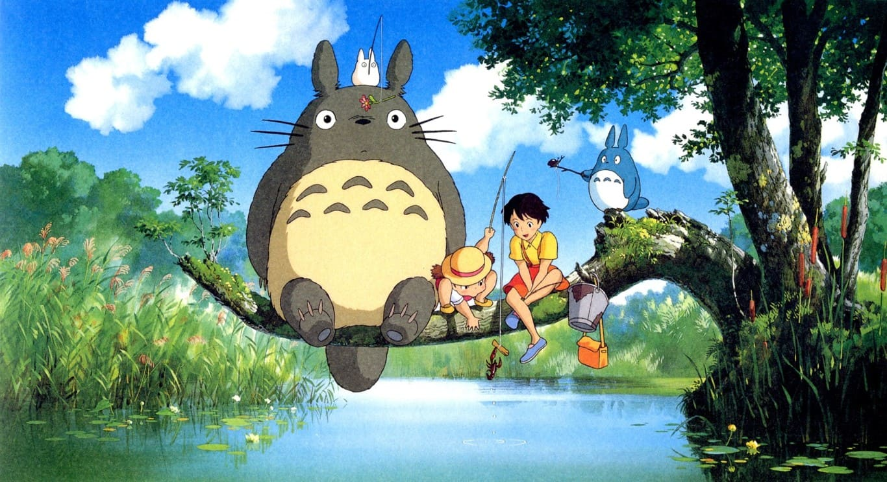
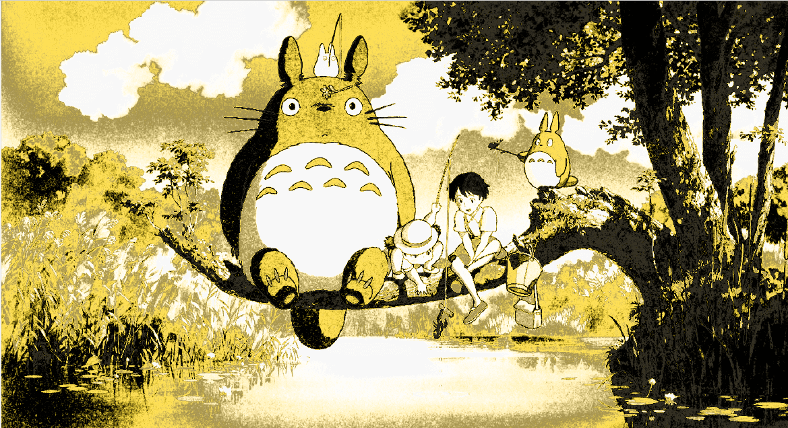
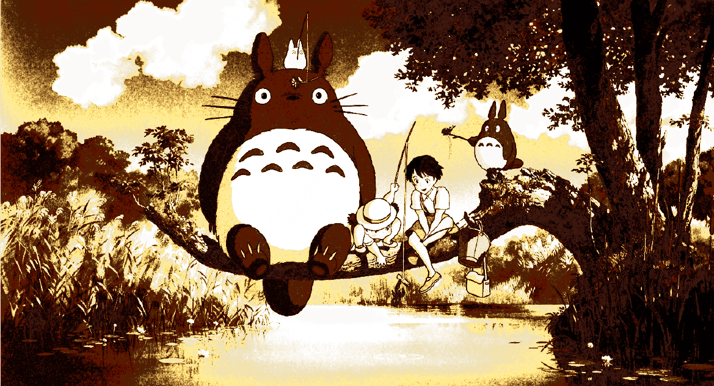
<<---------- Semana 11 ---------->
Herramientas de tratamiento de imágenes.:
Aplicamos tratamiento de imágenes
- Abrir la Imagen:
- Abre Photoshop y carga la imagen que deseas curar.
- Seleccionar la Herramienta Tampon de Clonar:
- Selecciona la herramienta Tampon de Clonar en la barra de herramientas (tecla de acceso rápido:
S).
- Selecciona la herramienta Tampon de Clonar en la barra de herramientas (tecla de acceso rápido:
- Ajustar los Parámetros de la Herramienta:
- Ajusta el tamaño y la dureza del pincel en la barra de opciones.
- Ajusta la opacidad si es necesario para un efecto más sutil.
- Seleccionar un Punto de Muestra:
- Mantén presionada la tecla
Alt(Windows) oOpción(Mac) y haz clic en el área de la imagen que deseas usar como muestra.
- Mantén presionada la tecla
- Curar el Defecto:
- Haz clic y arrastra sobre el defecto que deseas curar.
- Usar el Pincel de Reparación:
- Selecciona la herramienta Pincel de Reparación (tecla de acceso rápido:
J). - Ajusta el tamaño del pincel según sea necesario.
- Selecciona la herramienta Pincel de Reparación (tecla de acceso rápido:
- Curar el Defecto con el Pincel de Reparación:
- Pinta sobre el área que deseas curar. La herramienta tomará muestras automáticamente de las áreas circundantes.
- Refinar la Curación:
- Ajusta el tamaño del pincel y selecciona nuevos puntos de muestra si es necesario.
- Continúa curando hasta que estés satisfecho con el resultado.
- Guardar la Imagen Curada:
- Una vez satisfecho con el resultado, guarda la imagen curada en el formato deseado.
Herramientas Utilizadas
- Herramienta Tampon de Clonar
- Herramienta Pincel de Reparación
IMAGEN DE REFERENCIA
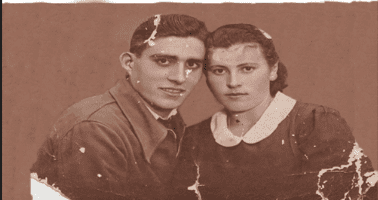IMAGEN CURADA

Hacemos recortes de sujetos
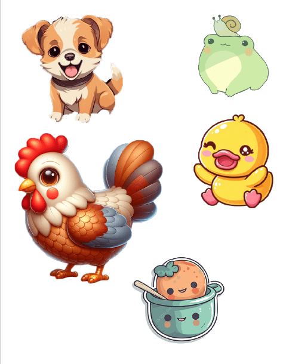<<---------- Semana 12 ---------->
Herramientas de seleccion.:
usamos las herramientas de selección
Crear un degradado en una máscara de capa
- Crea una máscara de capa vacía en la capa que quieres aplicar el degradado.
- Seleccione la herramienta de Degradado en la barra de herramientas.
- Haga clic y arrastre sobre la máscara de capa para aplicar el degradado. Puedes ajustar el ángulo y la longitud del degradado arrastrando.
- Puedes personalizar el degradado cambiando los colores de inicio y fin, así como los puntos intermedios.
- También puedes aplicar un degradado a un filtro inteligente, siguiendo los mismos pasos.
Herramientas Utilizadas
- Máscara de capa
- Herramienta de degradado
- Filtros inteligentes
Estas herramientas y pasos te permiten crear efectos de transición suaves y difuminados entre diferentes áreas de la imagen.
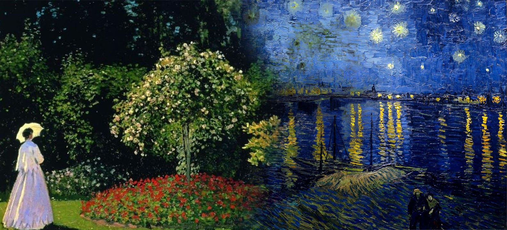
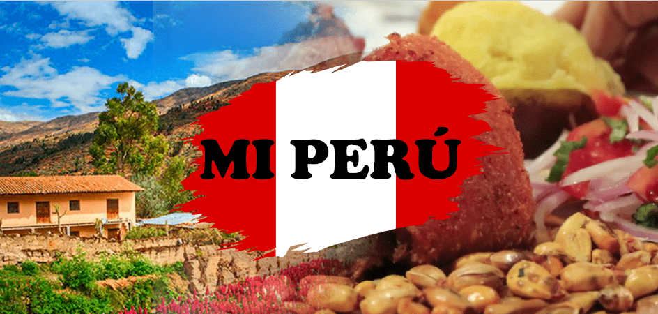
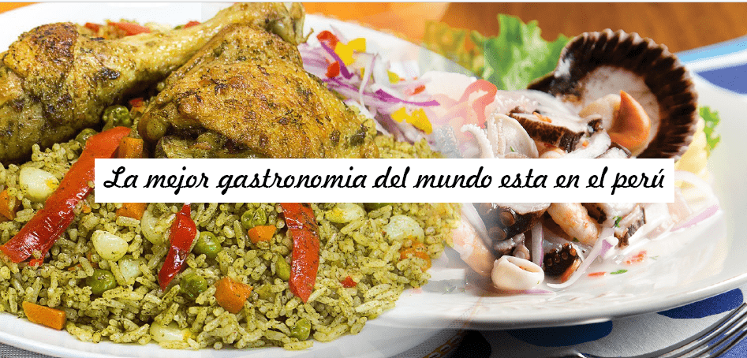
Cambiar el Color de Ropa, Ojos, Pelo, Labios, etc.
- Seleccione la imagen en la que desea realizar los cambios.
- Utilice la herramienta de Selección para seleccionar la parte de la imagen que desea cambiar de color.
- Cree una capa de ajuste de Tono/Saturación para cambiar el color de la selección.
- Ajuste los deslizadores de Tono, Saturación y Luminosidad para lograr el color deseado.
- Si es necesario, refine los bordes de la selección utilizando una máscara de capa para asegurarse de que la transición de color sea suave y precisa.
- Repita los pasos anteriores para cada parte de la imagen que desee cambiar de color.
Herramientas Utilizadas
- Herramienta de selección (Lazo, Varita mágica, etc.)
- Capa de ajuste de Tono/Saturación
- Deslizadores de Tono, Saturación y Luminosidad
- Máscara de capa
Estas herramientas y pasos te permiten cambiar el color de ropa, ojos, pelo, labios, y otras partes de la imagen de manera efectiva, logrando efectos realistas y personalizados.
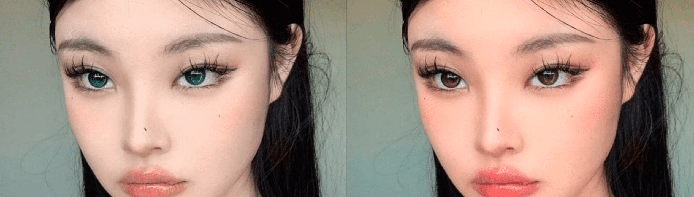
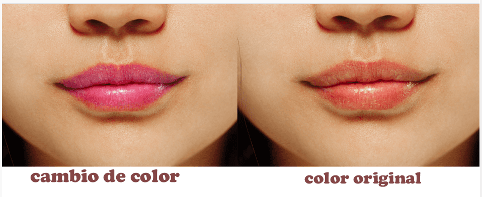

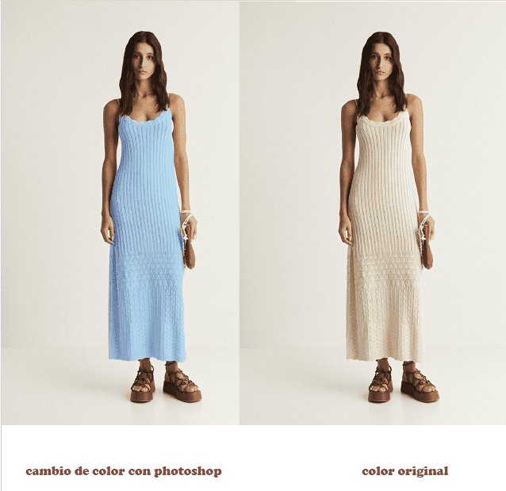

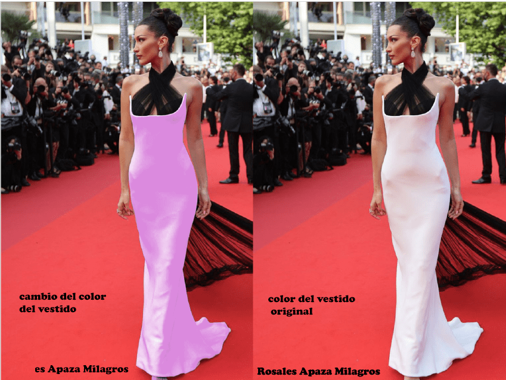
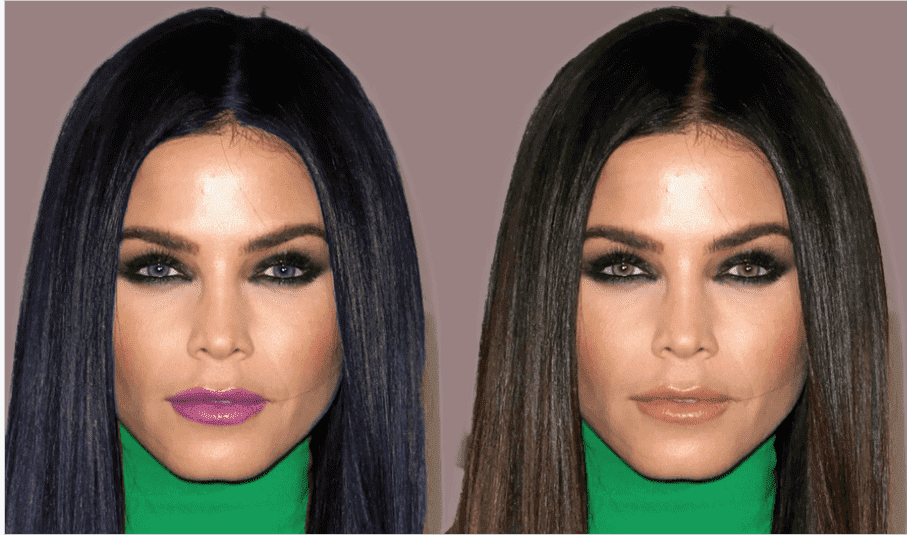
<---------- Semana 13 ---------->
Manipulación de capas.:
usamos las herramientas de manipulación de capas
- Abrir las Imágenes: Carga las dos imágenes en Photoshop.
- Seleccionar la Primera Imagen: Activa la primera imagen como documento actual.
- Crear una Nueva Capa: Añade una nueva capa en el panel de capas.
- Copiar la Segunda Imagen: Selecciona y copia el contenido de la segunda imagen, luego pégalo en la nueva capa de la primera imagen.
- Ajustar la Opacidad: Modifica la opacidad de la capa con la segunda imagen para alinearla con la primera.
- Usar la Herramienta Borrador: Selecciona la herramienta Borrador y ajusta su tamaño para eliminar partes de la segunda imagen.
- Refinar la Composición: Continúa ajustando la opacidad y usando el Borrador hasta obtener el resultado deseado.
- Fusionar las Capas: Una vez satisfecho, fusiona las capas en una sola imagen.
- Guardar la Imagen Final: Guarda la imagen combinada en el formato deseado.
Herramientas Utilizadas
- Herramienta de Borrador
- Panel de Capas
- Herramienta de Selección
- Herramienta de Transformación
- Control de Opacidad


<---------- Semana 14 ---------->
Herramientas de retoque y fotomontaje:
Retoque y Fotomontaje
IMAGEN DE REFERENCIA
IMAGEN CURADA

Hacemos recortes de sujetos

IMAGEN DE REFERENCIA

IMAGEN CURADA

Hacemos recortes de sujetos

<---------- Semana 15 ---------->
Manipulación de capas.:
usamos las herramientas de manipulación de capas


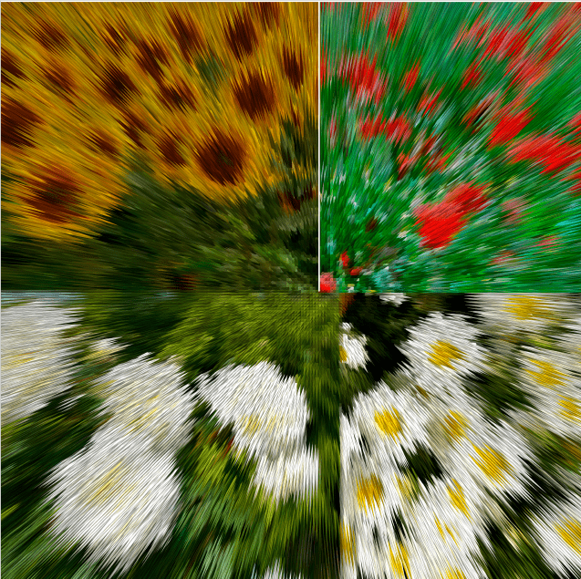


<---------- Semana 16 ---------->
Creación de flyers:
creamos flyers
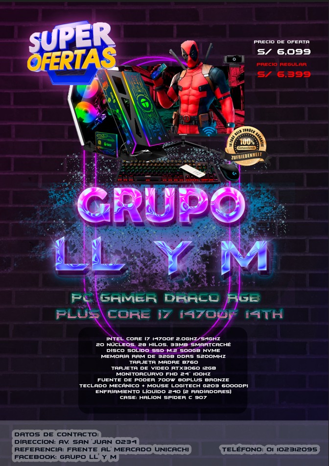


 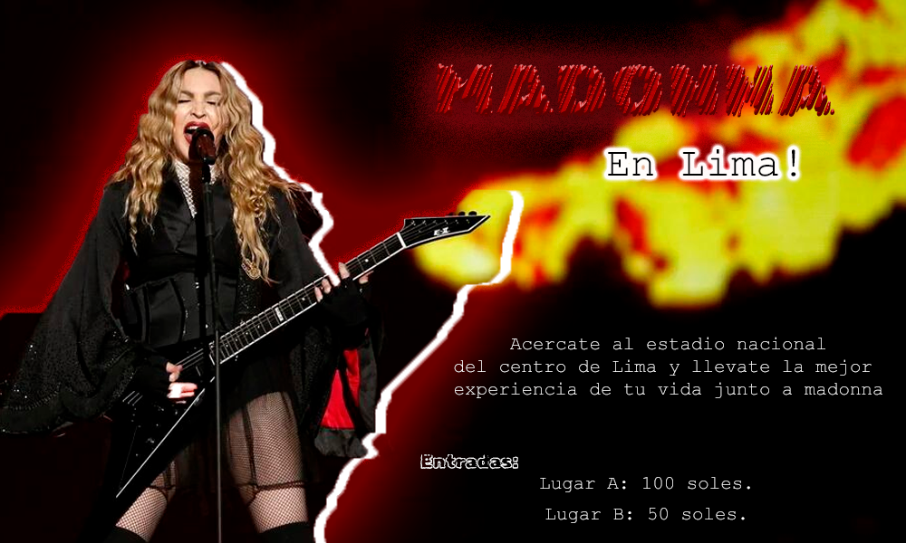
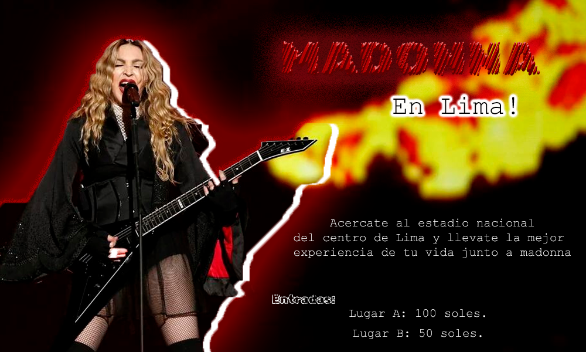
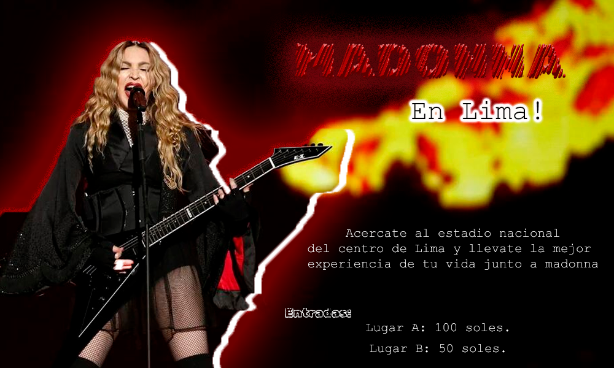